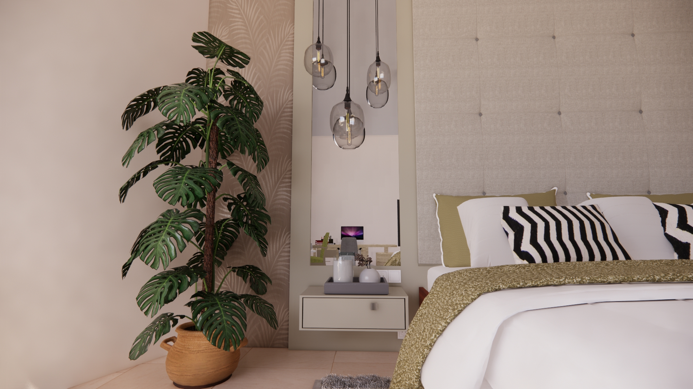

Project I.
Hotel Guest Room
A playful and vibrant hotel that speaks to young tourists and families are their target with an innovative integration of natural resources that will exhibit sustainability but not neglecting maintenance.
The Concept
A full-height upholstered headboard, mirrored panels, and glass pendant lights frame the bed. Olive accents and pale wood warm the white bedding, while black-and-white cushions and a soft gray rug add contrast and texture.
Interior Color Palette

Karla Angela Sison / Interior DesignerProject I.